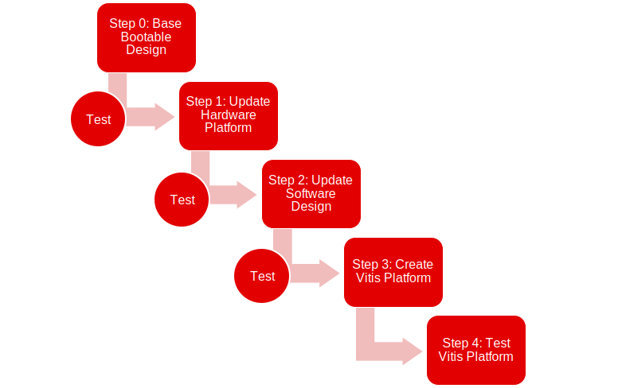

Vitis™ プラットフォームの作成チュートリアルxilinx.com の Vitis™ 開発環境を参照 |
Versal カスタム プラットフォーム作成チュートリアル¶
[Version]: 2021.2
このモジュールでは、VCK190 評価ボードのアクセラレーション アプリケーションを実行するカスタム プラットフォームを作成します。
通常の Vitis アクセラレーション プラットフォーム設計は、ベースのブータブル デザインのビルドから開始してから、プラットフォームに必要なコンポーネントとプロパティを追加します。エラーの発生を防ぐため、各ステップを次の手順に進む前に検証する必要があります。次の図はこのワークフローを示しています。

Vivado からは、プラットフォーム作成者がプラットフォームをすばやくビルドできるように、拡張可能なプラットフォームのデザイン例が提供されています。CIPS、NOC、DDR コントローラー、およびプラットフォーム プロパティのプリセットも追加されています。これにより、手順 0 と手順 1 のプラットフォーム作成プロセスが効率的になります。プラットフォーム ハードウェア デザインにコンポーネントを追加する場合は、デザイン例の作成後に追加できます (オプション)。
PetaLinux プロジェクトに XSA をインポートし、その他いくつかオプションを設定して、ソフトウェア コンポーネントを準備します。ソフトウェアおよびハードウェアのコンポーネントをビルドした後、プラットフォームをパッケージします。
各手順ごとに生成されたファイルをテストして、問題なく動作することを確認します。頻繁にテストをすることで、エラーが発生した場合にその原因を絞り込みやすくなります。最後に、このプラットフォームでテスト アプリケーションをいくつか実行し、このカスタマイズ済みのプラットフォームをテストします。
次の目次リンクを使用して、これらの手順を実行してください。
要件¶
このチュートリアル デザインは、VCK190 プロダクション ボードおよび VCK190 ES1 ボードをサポートしています。
Vitis 2021.2 は VCK190 プロダクション ボードをサポートしています。このボードを使用するために追加のライセンスや設定は必要ありません。
VOK190 ES1 ボードを使用する場合は、Vitis 2021.2 で追加の EA ライセンス設定が必要です。
このデザインには、インターネットにアクセスできる Linux ホストマシンが必要です。Linux OS では、Vitis ソフトウェアと PetaLinux がサポートされる必要があります。
参考資料¶
変更履歴¶
2021.2¶
手順 1 では、Vivado プロジェクトがハードウェアとハードウェアのエミュレーション用に XSA を個別にエクスポートします。手順 3 でプラットフォームを作成する際に、ハードウェアとハードウェア エミュレーション用に別々の XSA を指定することをお勧めします。
2021.1¶
手順 0: Vivado サンプル デザインには、クロックおよび割り込みのをさらにカスタマイズ可能なオプションがあります。
手順 1: [Platform Setup] ウィザードでジョブは問題なく実行できるため、プラットフォーム セットアップ用の Tcl コマンドを削除しました。
手順 2: PetaLinux ルート ファイル システム コンフィギュレーションで必要なのは、xrt パッケージのみです。xrt は、PetaLinux によって削除されます。
手順 2: PetaLinux は ZOCL ノード デバイス ツリーを作成できます。このため、デバイス ツリーの手動更新命令が削除されます。
手順 2: PetaLinux 2021.1 には GCC 6.0 よりも後のバージョンが必要です。Yocto 設定で [Enable buildtools extended] をオンにすると、回避できます。
手順 3: Vitis は BIF を生成できます。カスタム BIF を追加する手動ステップは削除されました。
Copyright© 2021 Xilinx